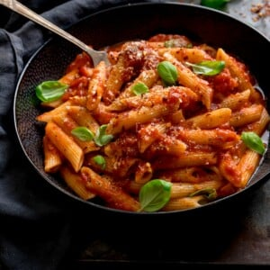

Penne Arrabbiata

Recipie Video
Description
This spicy Italian Penne Arrabbiata is homemade in 20 minutes! It makes a great vegetarian dish, served with fresh parmesan, basil and parsley.
Ingredients
- 3 tbsp extra-virgin olive oil
- 1 small onion peeled and finely diced
- 4 fat cloves of garlic peeled and minced
- 1 tsp chilli flakes (red pepper flakes) add more if you like it really spicy
- 4 x 400 g (4 x 14 oz) cans San Marzano tomatoes
- 1 tbsp tomato puree
- ½ tsp salt
- ½ tsp black pepper
- a good handful (about 10g/0.35oz) fresh basil leaves roughly chopped (or 1 tsp dried basil)
- 400 g (14 oz) penne pasta
- ¼ tsp black pepper
Steps
- Start by making the arrabbiata sauce. Add the oil to a large saucepan and heat over a low-medium heat.
- Add the chopped onions to the pan and cook for 10-15 minutes, stirring often, until the onions are very soft (they shouldn’t be browned though).
- Add the garlic and chill flakes and cook for a further 2 minutes.
- Add the tinned tomatoes, tomato puree, salt, and pepper and stir together.
- Turn up the heat to medium and bring to a gentle simmer. Then turn down the heat and simmer gently for 45-50 minutes, until thickened. Stir occasionally and break up the tomatoes with a wooden spoon as you stir.
- About 15 minutes before the sauce is ready, cook the pasta. Add the pasta to a large pan of boiling salted water.
- Bring to the boil, then simmer for about 11 minutes for al dente pasta (or 12-13 minutes if you like it a little softer).
- Drain the pasta in a colander and place the drained pasta back in the pan.
- Coming back to the sauce, stir in the basil and give the sauce a taste. Add a little more salt and pepper if you like.
- Pour the sauce over the pasta in the pasta pan and stir together to coat the pasta in the sauce.
- Serve topped with a sprinkling of black pepper, grated parmesan, and fresh basil leaves.
Main Page